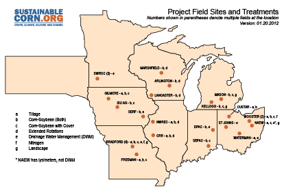

Obj. 1 - Develop standardized methodologies for estimating C, N, and water footprints of corn production in the region and perform baseline monitoring. We will measure soil quality, carbon (C) sequestration, GHGs, inorganic N, and soil water and correlate these measurements with agronomic indicators such as yield for sets of carefully chosen sites across the region. These data will be archived in a publically available database.
Obj 2 - Using the methods of Objective 1, perform field tests across 21 baseline sites in eight states to evaluate the impacts of a suite of crop management practices on C, N, and water footprints (see Figure 2). Each site has a corn (Zea mays L.)-soybean (Glycine max L.) rotation that will be used for baseline measurements. Measurements from these control plots will be compared to plots employing a suite of crop management practices that have promise in reducing GHGs and N in tile flow, and that have potential acceptability to farmers. These practices include no-till (NT), extended crop rotations, drainage water management, cover crops, and canopy N-sensors. Data will be archived in the database.
Baseline Monitoring & Experimental Trials (Obj. 1 & 2)
Project Field Sites and Treatments

Click map to view full-size .pdf (opens in new window)
Resources
GRACEnet - A program generating information concerning greenhouse gas measurements and carbon storage in agricultural systems.
Agricultural Drainage Management Systems (ADMS) Task Force - This task force, comprised of eight states in the upper Midwest, works with farmers, advisors, contractors and industry to implement agricultural drainage management systems.
Midwest Cover Crops Council - A diverse group from academia, production agriculture, non-governmental organizations, commodity interests, private sector, and federal and state agencies collaborating to address soil, water, air and agricultural quality concerns in the Great Lakes and Mississippi river basins.
Obj. 1 & 2 Scientists & Staff
Click here for more information about scientists and staff involved in project field trials.